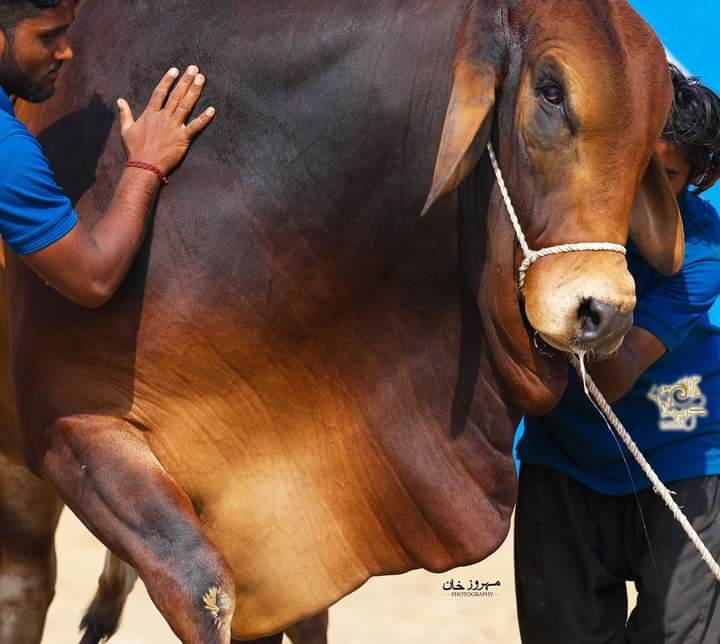

Facilities and Management at IMAM Cattle Farm
At IMAM Cattle Farm, we are committed to ensuring the highest standards of care for our livestock, backed by state-of-the-art facilities and expert management practices. Our dedication to quality is reflected in every aspect of our operations, ensuring the health and well-being of our cattle and the efficiency of our production.